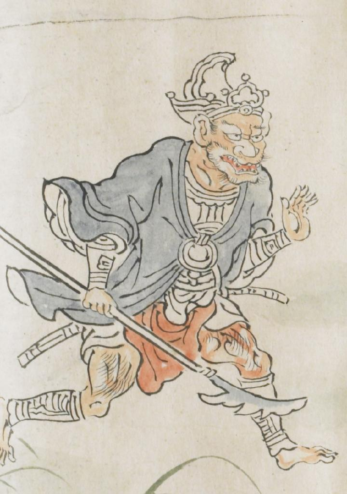

冠をかぶった鬼。肌色の体に青い衣服を身にまとっている。赤い腰巻を巻き、薙刀のような武器を右手に持っている。左手を正面に掲げている。
出典：親書誌：U426_nichibunken_0079：酒天童子絵巻；シュテンドウジエマキ／日付：2006／資源識別子：U426_nichibunken_0079_0002_0004
Copyright (c)2010- International Research Center for Japanese Studies, Kyoto, Japan. All rights reserved.